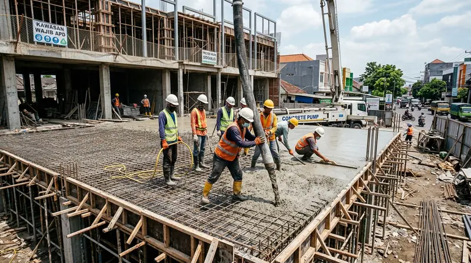

1. Kriteria Ruko Komersial Sukses di Koridor Bisnis Sidoarjo
Ruko yang sukses bukan hanya kokoh secara sipil, tetapi memiliki daya tarik visual yang meningkatkan nilai sewa dan trafik pelanggan bisnis.
Dalam merancang ruko komersial di Sidoarjo, kami memprioritaskan penyediaan area parkir mobil dan motor yang nyaman dengan perkerasan paving block K-300 tebal 8 cm. Akses pintu utama dilengkapi rolling shutter bermotor elektrik untuk keamanan optimal aset toko.
Sistem mekanikal elektrikal disiapkan dengan instalasi listrik daya 3-phase, jalur pembuangan grease trap untuk usaha kuliner/kafe, serta titik penempatan outdoor AC yang rapi dan tersembunyi.
- Perhatikan GSB: Pastikan batas depan bangunan mematuhi Garis Sempadan Bangunan (GSB) jalan provinsi agar terhindar dari sanksi penertiban.
- Jalur Grease Trap: Siapkan bak penangkap lemak (grease trap) pada saluran air kotor jika ruko berpotensi disewakan untuk restoran atau coffee shop.
- Dinding Bersama Kedap Suara: Gunakan bata ringan tebal 10 cm dengan plesteran acian padat untuk meredam kebisingan antar unit ruko gandeng.
2. Tahapan Konstruksi Ruko Bertingkat Presisi
Pembangunan ruko menuntut sinkronisasi jadwal kerja cepat agar unit dapat segera dioperasikan atau disewakan.
Pondasi strauss pile dikombinasikan dengan balok sloof beton bertulang mutu K-250/K-300 guna mencegah keretakan dinding bersama (party wall). Pengecoran dak lantai 2 dan 3 dikerjakan serentak menggunakan pompa beton (concrete pump) untuk menjaga homogenitas plat.
Pemasangan fasad ACP dan kusen aluminium kaca dikerjakan oleh aplikator terspesialisasi dengan sealent silikon tahan cuaca tropis.

Tahap pengecoran dak lantai bertingkat pada proyek pembangunan deretan unit ruko komersial.
3. Tabel Komparasi Bangun Ruko 2 Lantai vs 3 Lantai di Sidoarjo
Panduan estimasi biaya, dimensi standar, dan peruntukan bisnis ruko komersial di kawasan Sidoarjo.
Tabel berikut membandingkan karakteristik teknis antara ruko 2 lantai dan ruko 3 lantai di koridor bisnis Sidoarjo.
| Parameter Evaluasi | Ruko 2 Lantai Standar (4.5 x 14 m) | Ruko 3 Lantai Premium (5 x 16 m) |
|---|---|---|
| Total Luas Bangunan | ± 120 – 130 m² | ± 220 – 240 m² |
| Estimasi Biaya / m² | Rp 3.600.000 – Rp 4.300.000 | Rp 4.200.000 – Rp 5.200.000 |
| Total Estimasi Proyek | Rp 450.000.000 – Rp 550.000.000 | Rp 950.000.000 – Rp 1.250.000.000 |
| Peruntukan Ideal | Minimarket, Apotek, Kantor Notaris, Salon | Kantor Bank/Fintech, Restoran, Klinik Medis |
| Struktur Pondasi | Strauss Pile Dia. 25 + Cakar Ayam | Strauss Pile Dia. 35 Dalam + Balok Tie Beam K-300 |
| Material Fasad | Cat Weathercoat + Kaca Kusen Aluminium | Aluminium Composite Panel (ACP) + Curtain Wall |
| Estimasi Durasi Kerja | 3.5 – 4.5 Bulan | 5 – 6.5 Bulan |
4. Layanan Renovasi & Alih Fungsi Ruko Lama Menjadi Tempat Usaha Hits
Bagi pemilik ruko tua di kawasan Krian atau Sidoarjo Kota, peremajaan fasad dan interior memberikan lonjakan nilai sewa.
Kami melayani perombakan fasad depan menggunakan ACP modern, pembongkaran dinding sekat menjadi ruang terbuka, serta penambahan lantai mezzanine berstruktur baja ringan untuk menambah kapasitas ruang usaha.
Pertanyaan yang Sering Diajukan (FAQ)
Kesimpulan Praktis
Membangun ruko dengan kualitas konstruksi unggul dan tampilan fasad profesional adalah magnet penarik pelanggan bagi bisnis yang beroperasi di dalamnya.
Jadikan proyek komersial Anda di Sidoarjo sukses bersama Kontraktor Bangunan. Hubungi kami untuk jadwal survei dan penawaran RAB terbaik hari ini!